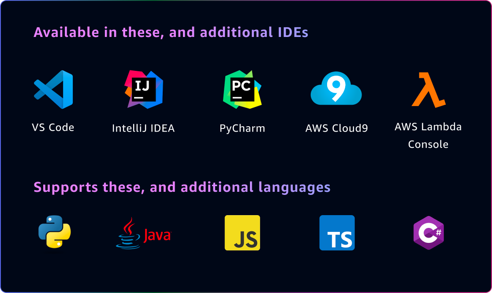

A Giant Leap Forward in Developer Productivity
57% faster | 27% more likely to succeed
Amazon ran a productivity challenge during the preview, and participants who used CodeWhisperer were 27% more likely to complete tasks successfully and did so an average of 57% faster than those who did not use CodeWhisperer.
Amazon CodeWhisperer is an AI-powered productivity tool that generates real-time, single-line or full-function code suggestions in your integrated development environment (IDE) and in the command line to help you quickly build software.
With CodeWhisperer, you can write a comment in natural language that outlines a specific task in English, such as, “Upload a file with server-side encryption.” Based on this information, CodeWhisperer recommends one or more code snippets directly in the IDE that can accomplish the task.
You can quickly and easily accept the top suggestion (tab key), view more suggestions (arrow keys), or continue writing your own code. You should always review a code suggestion before accepting it, and you might need to edit it to ensure that it does exactly what you intended.
For more information, see the User Guides for Visual Studio (VS) Code and JetBrains, AWS Cloud9, the AWS Lambda console, JupyterLab, and Amazon SageMaker Studio, Command line, and Visual Studio (preview).
Amazon CodeWhisperer Resources
Getting Started
- Step 1: Install
-
Install the CodeWhisperer extension for your editor
- VS Code, Visual Studio, JetBrains (e.g., IntelliJ IDEA), Command line, Amazon SageMaker Studio, JupyterLab, AWS Glue Studio, Notebook Note: CodeWhisperer comes built-in with AWS Cloud9 and the AWS Lambda console.
- Step 2: Authenticate
- Sign in with Builder ID for Individual users and IAM Identity Center for Professional users.
- Step 3: Start building
- Open your editor, and CodeWhisperer should just work!
Use your favorite tools
CodeWhisperer fits the way that you work. Select from 15 programming languages, including Python, Java, and JavaScript, and your favorite integrated development environments (IDEs), including VS Code, IntelliJ IDEA, Visual Studio (preview), AWS Cloud9, the AWS Lambda console, JupyterLab, and Amazon SageMaker Studio, and your favorite CLIs including macOS Terminal, iTerm2, and the built-in VS Code terminal.
Get More Done Faster
Amazon CodeWhisperer generates code suggestions ranging from snippets to full functions in real time in the IDE based on your comments and existing code. It also supports CLI completions and natural-language-to-bash translation in the command line.
Code with confidence

CodeWhisperer can flag or filter code suggestions that resemble publicly available code. Get the associated open-source project’s repository URL and license so that you can more easily review them and add attribution.
Enhance code security

Scan your code to identify hard-to-find security vulnerabilities and get code suggestions to help remediate the identified issues. Generative AI-powered code suggestions are tailored to your application code, so you can quickly accept fixes with confidence and focus on higher-value work.